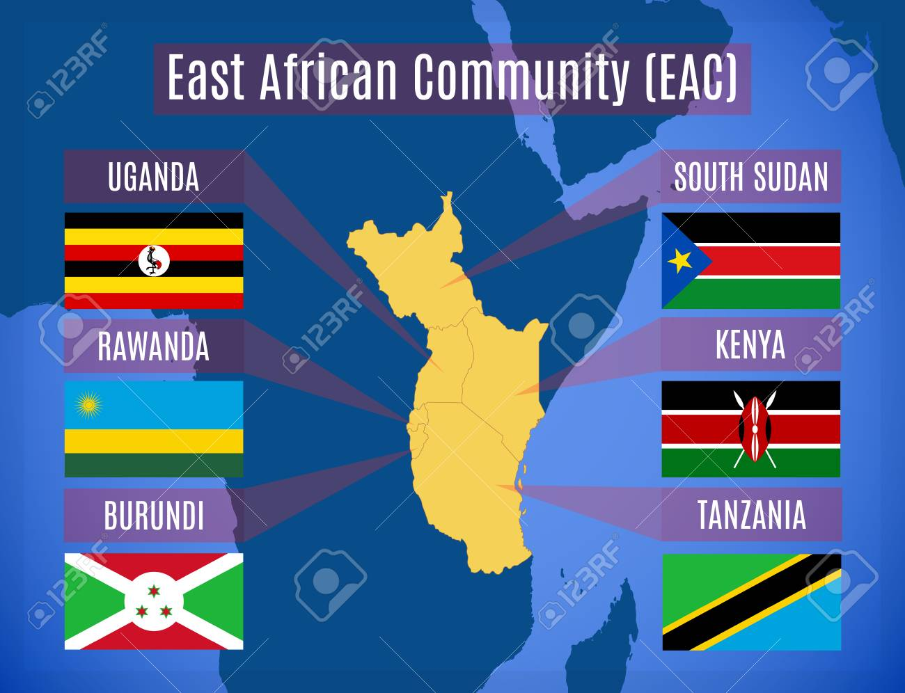

WELCOME TO THE EAC

ABOUT EAC
The East African Community (EAC) is an intergovernmental organization composed of six countries in the African Great Lakes region in eastern Africa: Burundi, Kenya, Rwanda, South Sudan, Tanzania, and Uganda.
Paul Kagame, the president of Rwanda, is the EAC's chairman.
The organisation was founded in 1967, collapsed in 1977, and was
revived on 7 July 2000.[6] In 2008, after negotiations with the
Southern African Development Community (SADC) and the Common Market
for Eastern and Southern Africa (COMESA), the EAC agreed to an expanded
free trade area including the member states of all three organizations.
The EAC is an integral part of the African Economic Community.
The capital of the EAC is Arusha, while the most-populous city is Dar es Salaam.
The EAC is a potential precursor to the establishment of the East African Federation,
a proposed federation of its members into a single sovereign state.[7]
In 2010,
the EAC launched its own common market for goods, labour, and capital within the region,
with the goal of creating a common currency and eventually a full political federation.[8]
In 2013,a protocol was signed outlining their plans for launching a monetary union
within 10 years.[9] In September 2018 a committee was formed to begin the
process of drafting a regional constitution.[10].
Kenya, Tanzania, and Uganda
have cooperated with each other since the early 20th century.
The customs union between Kenya and Uganda in 1917, which Tanganyika joined in 1927,
was followed by the East African High Commission (EAHC) from 1948 to 1961,
the East African Common Services Organization (EACSO) from 1961 to 1967,
and the 1967 to 1977 EAC.[11] Burundi and Rwanda joined the EAC on 6 July 2009.[12]
The EAC was revived on 30 November 1999, when the treaty for its re-establishment was signed.
It came into force on 7 July 2000, 23 years after the collapse of the previous community and its organs.
A customs union was signed in March 2004, which commenced on 1 January 2005. Kenya, the region's largest
exporter, continued to pay duties on goods entering the other four countries on a declining scale until 2010.
A common system of tariffs will apply to goods imported from third-party countries.[citation needed] On 30 November
2016 it was declared that the immediate aim would be confederation rather than federation.
MISSIONS
Customs Union
Through the Customs Union Protocol, trade within the EAC region has been enhanced significantly. Additionally, EAC has been an attractive foreign direct investment hub.
Common Market
EAC guides the free movement of goods, people, labour, services and capital from one Partner State to another as well as the rights of establishment and residence without restrictions.
Monetary Union
The East African Monetary Union Protocol provides for the attainment of a single currency for daily transactions within the Common Market..
PoliticalFederation
The EAC Partner States envisage coming together to form a super-state under a single political authority / government.
 »
»{kind=link}
{kind=link}
{kind=link}
{kind=link}
{kind=link}